Arabesque also allows you to import your own data sets via the home page, in order to create a new map.
At least a link/flow origin-destination data file is required, formatting with three colums. A node file is also required for the geolocalisation of the origin and destination places.
In Arabesque 2, you have to declare or to import your nodes firstly.
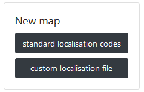
For this example, we will use for example the historical trade flows listed in the mobscol file. For more informations about this dataset see in arabesque-examples.
Arabesque provides a list of codes identifying the most common spatial units at different geographical scales, at global, at European or at a national level.
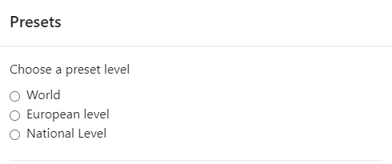
At global level, for example, different grids are available (countries, towns, ports, etc.).
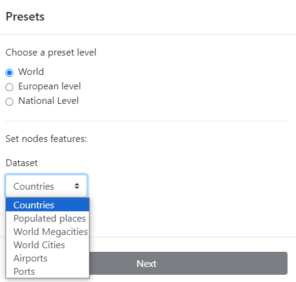
The choice of any level leads to the identification of the type of the ID (identifier) code, such as ISO2, ISO3 for the world country level.
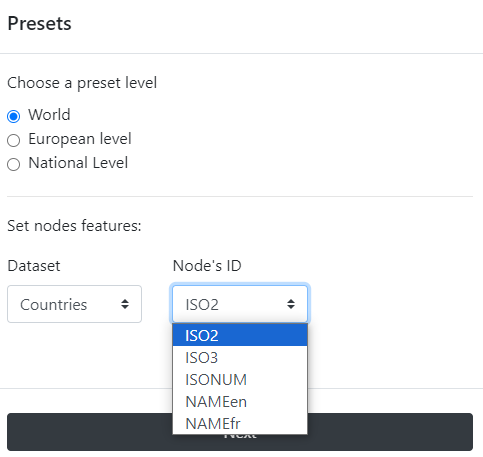
Once the ID code has been selected (e.g. ISO2), the link file must be chosen.
If you have custom nodes data associated with your ODs, you can load the corresponding files by selecting the custom button.
Then you have to browse to pick a .CSV or a GEOJSON file.
The .CSV file must be in long format, and have separator : , and decimal : .
See example below.
Example: the SAGEO_RIcardo_nodes.CSV file
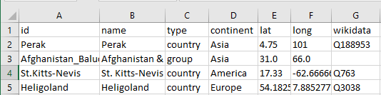
The most important here are the column ‘lat’ (Y) and ‘long’ (X) which will be used to geolocate the origin and the destination places, then the column ‘ID’
Once you have identified these three columns (ID, lat, long), you can import the nodes.
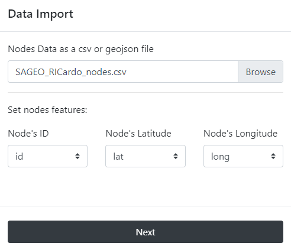
If you do not have a file for the geometry, you can use the codes identifying the reference data (e.g. INSEE codes of the French communes, ISO codes of the countries), to automatically geolocate your nodes. See Preset.
4.2 Flow/links importation
After loading the nodes files, you have to browse your directories to upload your origin-destination matrix.
The flow/links file must be in .CSV (separator : , and decimal : .) in long format.
It must contain at least 3 columns :
the ID of the place of origin ;
the ID of the place of destination locations ;
the link/flow values.
Important:
The ID of the places of origin and destination must be identical to that of the nodes.
4.2.1 Unique flow OD matrices
Unique OD matrices have a unique value for each pair of locations - this makes them different from complex matrices [See Complex OD matrices].
See example below.
Example: the Mobscol origin-destination .CSV file. Simple matrice with 3 columns.
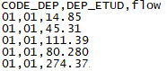
The ID of the place of origin is “CODE_DEP”.
The ID of the place of destination is “DEP_ETUD”
The flow value is “flow” or is “count”.
Once the origin and destination IDs have been identified, they need to be declared in Arabesque for importing flows.
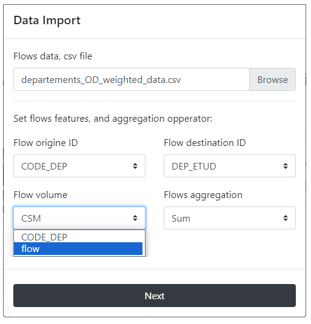
If the matrix is complex (as in that example), you have to choose a method for aggregating the links when importing. [See Complex OD matrices]
4.2.2 Complex OD matrices
The matrices concerned here are characterized by several attributes, for categorical matrices (e.g. flows that concern several social groups, several goods transported) or for temporal matrices (e.g. flows occur on several dates).
If so, agregations procedures are suggested when importing the dataset in Arabesque. By default, the sum function is applied in the lack of any other specifications. However, you can choose to apply an average, minimum, maximum or median function calculated on all the matrices or graphs provided.
It is also possible to choose a single date or to aggregate the data, according to a given function, over a period or for categories.
Example: the Mobscol origin-destination. Complex matrice.
.CSV format
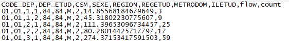
.XLXS format.
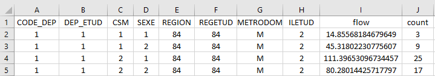
This OD matrix is available for different categories (i.e. SEXE=“1” or SEXE=“2”), so you will need to choose a method for aggregating the links when importing, hereby the sum function.
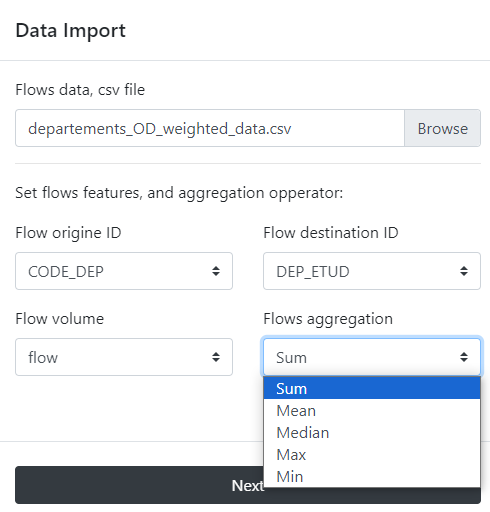
This aggregation function is important because it defines the default flowmap which will be proposed at the entry of Arabesque: the percent of links, nodes and interaction depicted, the intensity of the colors and the opacity of the corresponding signs (see Data processing chapter).
After aggregation, Arabesque will draws only one line (and not as many lines for each attribute in the flow file).
Note:
This aggregation does not interfere with the geo-visualization possibilities that will remain available for all existing attributes. The flow mapping according to one of these attributes can be performed in the filtering section.
After loading the link and node files, Arabesque automatically performs a join of the common attributes between the two files.
4.3 Checking missing nodes/links features
Links that do not have an origin and/or destination ID are automatically deleted. Nodes that don’t have an ID code that allows them to be geographically located are also not kept.
The list of links and nodes that may have been delete during the importation procedure is displayed in a new window.
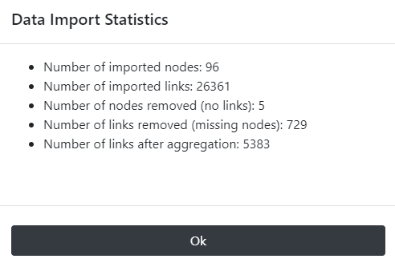
This list is for quick reference only. You must copy and paste it (into a text file, for example) if you want to keep the summary of the deleted entities : here 5 nodes and 729 likns. Nodes have been deleted because they are not related to other nodes.
After loading the link and node files, Arabesque automatically performs a join of the common attributes between the two files and computes indicator on botk links and nodes data.
4.4 Import a previous workspace
Import a previously workspace of flowmapping by loading a project file in .zip format.
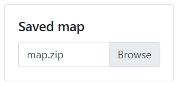
.zip file
Do not modify this .zipfile, otherwise it will no longer work with Arabesque, and you will not be able to load your workspace.